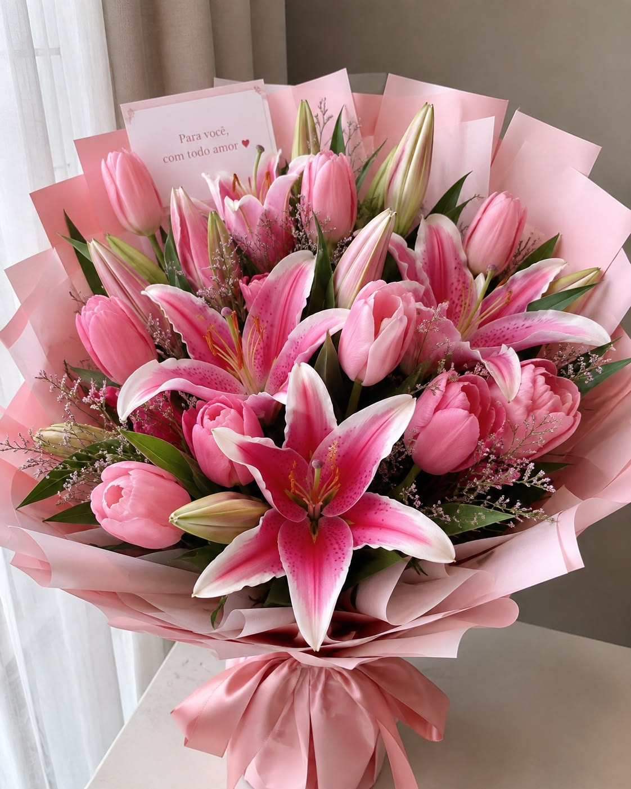

Welcome to Our Flower Guide
Flowers make our lives beautiful with their colours, fragrance and natural beauty. Explore different flowers and learn about their meanings.
Discover the Beauty of Flowers
Enjoy watching beautiful flowers and their natural beauty.
| Flower Name | Colour | Meaning | Best Occasion |
|---|---|---|---|
| Rose | Red | Love | Anniversary |
| Tulip | Pink | Care | Birthday |
| Lily | White | Peace | Wedding |
| Sunflower | Yellow | Happiness | Celebration |
| Lotus | White | sympathy | weddings |
Flowers make our lives beautiful with their colours, fragrance and natural beauty. Explore different flowers and learn about their meanings.

